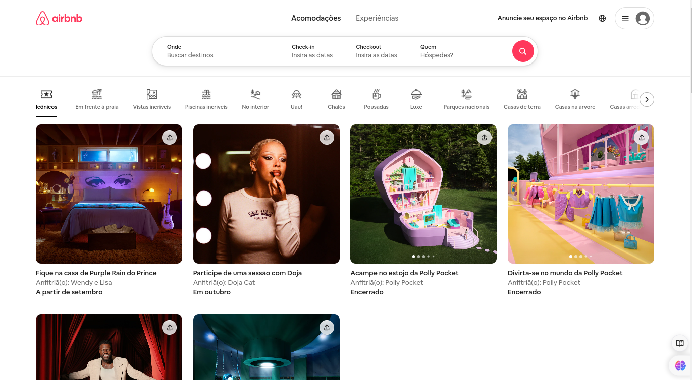
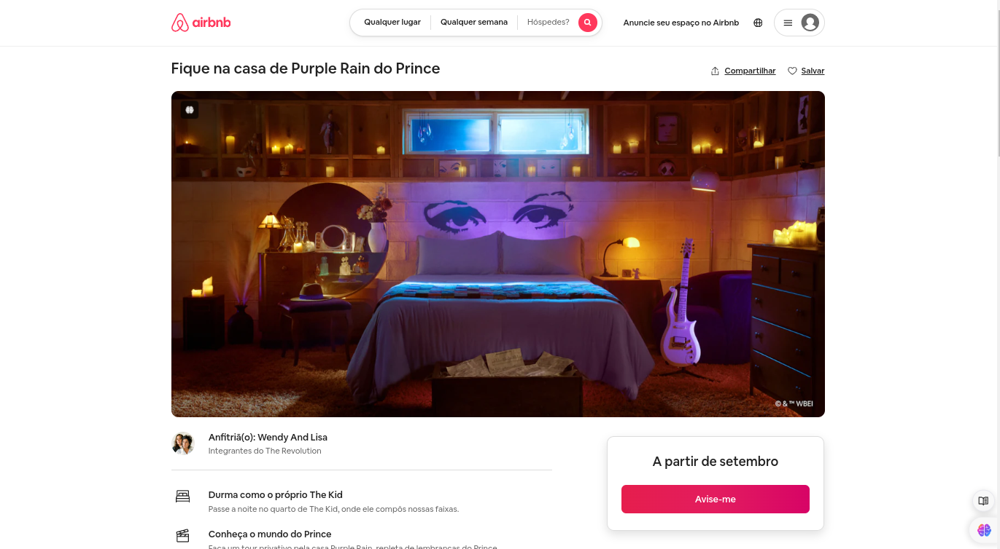

Disciplinas
-
FUNDAMENTOS DE WEB Concluído
Materiais
Realize buscas por sites da web que foram construídos utilizando algum dos front-end apresentados abaixo:
- Sencha
- Angular
- React JavaScript Framework
- Vue.js
- Ember.js
- Meteor
- Mithril
- Node.js
- Polymer
- Aurelia
- Backbone.js
Conteúdo
Escolha um site para apresentar o resultado de uma página construída usando a tecnologia acima. Não esqueça de incluir em sua postagem o endereço e a captura de telas mostrando as páginas. Procure evidenciar as características que o front-end oferece e discuta sobre seus elementos.
Resolução
Tecnologia: React.
Site: AirbnbEndereço: Airbnb →
Página principal:
Página Detalhes:
O Airbnb utiliza uma combinação de tecnologias para seu desenvolvimento. O back-end do site é principalmente construído com Ruby on Rails, enquanto o front-end utiliza React.
No início, a plataforma era predominantemente em Ruby on Rails, mas ao longo do tempo, o Airbnb adotou React para melhorar a experiência do usuário e tornar a interface mais dinâmica.
Componentes reutilizáveis:O airbnb faz uso de componentes React para criar elementos reutilizáveis em várias partes do site. Ex.:
- Cartões de listagem de propriedades, são componentes que podem ser reutilizados em outras páginas.
O React permite o gerenciamento do estado da aplicação o que é visto na maneira como as informações sobre propriedades e reservas são atualizadas em tempo real sem recarregar a página.
Performance:O React melhora a performance do site através da atualização eficiente do DOM, que contribui para uma experiência rápida e responsiva.
Navegação:O site também utiliza o React Router para gerenciar a navegação entre diferentes páginas do site, como a home, listagem e detalhes.
- É visível ao navegar pelo site sem a página recarregar.
O uso de React no airbnb mostra como a tecnologia pode ser utilizada ao construir interfaces de usuário interativas.